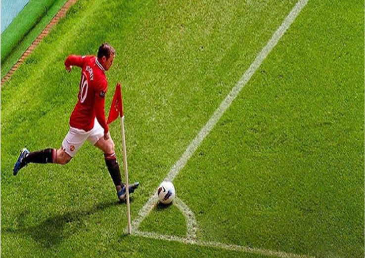

Kèo rung – Tổng hợp thông tin từ A đến Z
Lần cập nhật cuối: 20 Tháng Năm, 2024
Kèo rung là một trong những kèo cá cược bóng đá đang nhận được sự quan tâm thời gian gần đây. Vậy kèo rung là kèo gì? Cách chơi kèo cá cược này có khó không và chơi như thế nào để thắng lớn? Cùng jbovn.club tìm hiểu mọi thông tin về kèo cá cược này qua bài viết sau đây.
Tìm hiểu kèo rung là kèo gì?
Cá cược bóng đá ngày càng phát triển với sự ra đời của hàng loạt các kèo cá cược khác nhau. Bên cạnh các kèo chính như kèo tài xỉu, kèo châu Âu, kèo Handicap,… các kèo phụ cũng nhận được sự quan tâm của người lớn. Kèo rung là một trong những kèo cá cược bóng đá phụ rất hot thời gian qua.
Tìm hiểu kèo rung là kèo gì?
Kèo rung hay Running Ball là kèo cá cược phát sinh trong thời gian trận đấu đang diễn ra. Kèo này không có tác dụng dài mà chỉ diễn ra ở một thời gian nhất định. Người chơi phải theo sát trận đấu mới có thể tham gia, không thì rất dễ bị bỏ lỡ kèo. Kèo này thú vị ở chỗ nó sẽ không giới hạn ở số lượng mà tùy thuộc vào quy định của từng nhà cái khác nhau. Trận đấu càng có nhiều biến động như ghi bàn, thẻ vàng, thẻ đỏ, phạt góc,.. số lượng kèo rung sẽ càng lớn.
Có nên chơi kèo rung hay không?
Kèo cá cược này xuất hiện bất ngờ, không có thời gian nhất định nên nhiều cược thủ khá băn khoăn không biết có tham gia chơi hay không? Theo chia sẻ của đa số người chơi kèo này, có nhiều lý do anh em không nên bỏ qua kèo rung.
Có nên chơi kèo rung hay không?
Sau đây là một số lý do, anh em nên thêm kèo rung vào danh sách những kèo cá cược bóng đá nên tham gia:
- Người chơi có thể thay đổi lựa chọn dễ dàng khi tham gia kèo cá cược này. Ở những kèo khác, người chơi chỉ được đưa ra lựa chọn một lần duy nhất và không thay đổi dù bất cứ tình huống nào của trận đấu.
- Thời gian đặt cược kèo này cũng rất linh hoạt, bất cứ khi nào cho đến khi trận đấu kết thúc.
- Kèo rung thay đổi theo diễn biến của trận đấu nên người chơi chỉ cần theo dõi diễn biến là có thể đưa ra lựa chọn cho mình. Đây được xem như một hình thức tăng thu nhập của người chơi.
Kinh nghiệm bắt kèo rung chính xác nên biết
Kèo cá cược này đơn giản, dễ chơi nhưng chưa chắc người chơi đã có thể dễ dàng thắng. Bằng việc áp dụng nhiều kinh nghiệm và mẹo chơi sẽ giúp người chơi nâng cao tỷ lệ thắng cược của mình. Sau đây là những kinh nghiệm bắt kèo rung hay, hiệu quả mà người chơi nên biết:
Chọn trận đấu
Không phải mọi trận đấu đều nên tham gia kèo rung đâu bạn nhé. Theo kinh nghiệm của chuyên gia cá cược bóng đá, bạn nên ưu tiên chọn trận đấu có tỷ lệ bàn thắng ở mức bình thường, không nên chọn trận đấu quá căng thẳng hay có nhiều bàn thắng. Hai đội có khả năng thi đấu cân tài, cân sức là phù hợp nhất để chơi.
Nên chọn trận đấu khi chơi kèo rung
Những trận đấu mà 2 đội quá chênh lệch về khả năng thi đấu, nhiều kịch tính thì sẽ rất khó đoán, tỷ lệ thắng cược sẽ không cao. Sau khi chọn được trận đấu phù hợp, anh em chỉ việc xem kèo và bắt đầu đặt cược cho phù hợp.
Có kế hoạch chơi
Kèo rung dễ chơi, dễ đoán nên nhiều người chơi cố gắng tham gia càng nhiều càng tốt với mong muốn rinh về nhiều khoản tiền thưởng. Tuy nhiên để bắt chuẩn, anh em không nên tham gia quá nhiều kèo trong một ngày. Số lượng kèo rung hợp lý để chơi một ngày là 3 kèo. Anh em cũng không nên tham gia các kèo ở một sườn giờ. Bởi người chơi sẽ phải phân bổ suy nghĩ để dự đoán trận đấu. Điều này có thể dẫn đến những sai lầm không đáng có khi chơi cá cược.
Kèo cá cược này không có tính ổn định nên có thể bị hủy bất cứ lúc nào. Do đó, người chơi cần hết sức chú ý để có thể tham dự cũng như xử lý khi kèo này bị hủy. Trong một số trường hợp chỉ 1-2 phút thôi là người chơi có thể đặt kèo và nhận tiền thưởng về mình rồi.Có kế hoạch chơi rõ ràng
Xem trận đấu kỹ lưỡng
Muốn có kết quả hoàn hảo nhất khi chơi kèo này, anh em phải theo sát diễn biến của trận đấu. Khi theo dõi sát diễn biến, cược thủ có thể kịp thời gian gia, phát hiện những tình huống thuận lợi và phân tích tình huống chính xác. Bên cạnh đó, những lời bình luận từ bình luận viên cũng sẽ giúp anh em có cái nhìn chính xác hơn về trận đấu.
Với những kèo không chắc chắn, anh em nên đặt cược với số tiền nhỏ, giải trí là chính. Những kèo chắc tay, suy nghĩ kỹ càng, anh em có thể đặt cược với số tiền lớn hơn. Những khoản tiền cược nhỏ sẽ giúp người chơi dễ dàng hơn trong quá trình xả kèo.Học hỏi bí quyết soi kèo
Các kèo cá cược phụ vẫn có những mẹo chơi hay, thú vị mà anh em không ngờ tới. Để học hỏi được các bí quyết chơi này, anh em cần tham gia vào các diễn đàn, hội nhóm. Tại đây, rất nhiều chuyên gia và cao thủ sẵn sàng chia sẻ kinh nghiệm, bí quyết chơi cho anh em.
Sau khi đã tham khảo, anh em tổng hợp lại để áp dụng trong từng kèo cụ thể. Các kinh nghiệm nên được ghi thành quyển để tiện theo dõi. Mỗi bí quyết chơi sẽ phù hợp với từng tình huống và trận đấu khác nhau, việc nắm trong tay càng nhiều bí quyết, mẹo chơi càng giúp người chơi vững vàng hơn trong mọi chiến thắng.Học hỏi bí quyết soi kèo rung từ chuyên gia
Đọc thông số kèo kỹ
Do không xuất hiện thường xuyên nên kèo rung sẽ dễ bị nhầm lẫn bởi những thông số của kèo khác. Người chơi cần quan sát kỹ bảng thông số kèo, đọc chính xác các số xuất hiện để có thể đặt cược đúng chỗ, đúng lúc nhất. Rất nhiều trường hợp người chơi vội vã đặt cược đã phải nhận kết quả không mấy vui vẻ.
Trên đây là những chia sẻ hữu ích về kèo rung mà cược thủ nên biết. Mong rằng những kiến thức cá cược bóng đá này đã giúp anh em rinh về nhiều chiến thắng lớn.BÀI VIẾT MỚI NHẤT
Siêu Sao Bắn Cá JBOVN Hấp Dẫn Như Thế Nào?
Cách Chơi Bài Tấn & Thủ Thuật Chơi Cực Hay Ít Người Biết
Cách Chơi Bài Tam Cúc: Hướng Dẫn Từ A Đến Z Cho Người Mới
Thể thao điện tử – Sảnh cược đổi thưởng hấp dẫn tại nhà cái JBOVN
Hướng dẫn cách chơi Dice JBOVN dành cho tân thủ
Kèo rung – Tổng hợp thông tin từ A đến Z